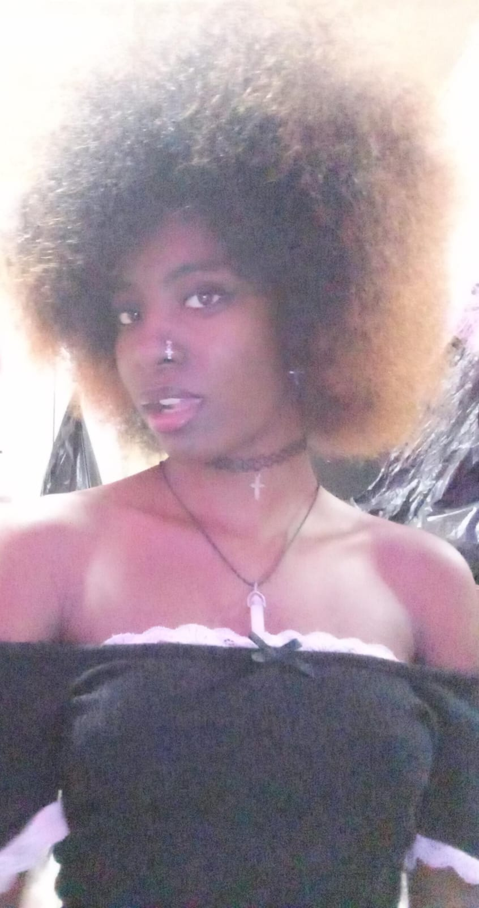

PERSONAL INTELLIGENCE SYSTEM
Meet Nelly.
READY
IdleReady to chat

YOUR AI COMPANION
I’m here for you.
Tap the microphone or say “Hey Nelly” after enabling wake-word mode.
{}
ConversationSpeak naturally, or type a message
Microphone idlePowered by Claude • N.E.L.L.Y.